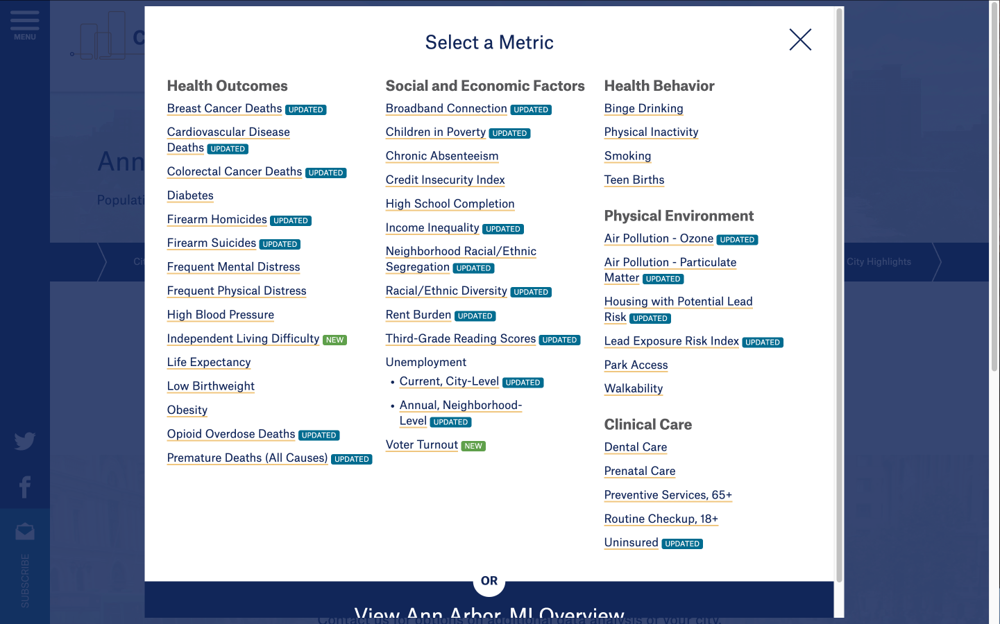

Role
Timeline
Aug 2023 - May 2024
Tools
Introduction
The City Health Dashboard is a powerful platform designed to provide city-level health data to policymakers, public health professionals, and researchers. By enabling users to access, visualize, and interpret health data, the City Health Dashboard aims to support data-driven decision-making and promote health equity in urban areas.
Problem Statement
How might we guide the City Health Dashboard forward in improving user engagement and overall user experience for both experienced and new users?
As powerful and impactful as the platform already is, our client faced a huge challenge of not having enough user data, which prevented them from further improvement. Our goal as UX researchers and designers were to help our client to gather enough data through various research instruments and make recommendations as we discover the problems.
Research
City Health Dashboard has a number of usability issues despite reported positive experiences by current users.
User Interviews
Both experienced and new users appreciate the city-level data granularity provided by the site and stressed the benefits of having integrated data comparison tools.
- 7 participants
- 5 experienced users with 2 new users
- Ranging from policy makers, public health researchers, university professors
Student Data Analyst
Government Worker
University Professor
Competitve Analysis
Heuristic Evaluation
The City Health Dashboard has moderate usability issues, predominately violating the following heuristics:
- Visibility of System Status
- Consistency and Standards
- Flexibility and Efficiency of Use
Usability Testing
City Health Dashboard is a powerful tool with exising systems causing challenges for novice and new users.
To gain a deeper insights into how users, specifically those with no prior experience with the site, interact with the City Health Dashboard, we conducted usability testing with a diverse group of participants. Our goal was to identify specific pain points and extract actionable feedback to enhance the overall user experience.
All 5 participants had a rather pleasant experience interacting with the City Health Dashboard for the first time, indicated by an overall rating of 7+ on a scale of 1-10 all across the board. However, the average failure rate is as high as 33%.
“Why is it not showing anything after I selected a metric?”
“I found the interface rough on new users. it seems like it would be intuitive for experienced users. It's hard for me to find information when not familiar with the structure of the site and the functionality provided by the site.”
Key Findings
Lack of Loading Status
There were multiple instances throughout the site where there is no visual indication when the data is being fetched and loaded to the page.

lack of loading status when selecting filters for comparing cities

lack of loading status when the map is populating
Information Architecture and Navigation
80% of the participants reported that they felt the complexity of the structure of the site hindered their usage. It is safe to say that revamping the information architecture of the site will greatly improve user experience. However, it is very costly for the company considering the time and resources that need to be go into research, investigation, re-design and development. So we decided to do investigate the existing architecture.

Searching and selecting the city does not take the users to the city’s page, but it brings up a pop-up selection menu. Users will have to click on the [View City Overview] button to go to the city’s page.
60% of the Participants reported having trouble understanding what each page does and that the navigation label is not descriptive enough.
Proposed Solution
We recommend that the client prioritize the low workload but high user cost and frequency task. Addressing those first would help improve the user experience.
1. Add a Loading Status to the Comparison tool
Clearing out blockades like the lack of loading status with simple visual fixes would significantly improve the overall experience for both novice and experienced users.
2. Information Architecture Reorganization
The current structure of the site made it hard for new users to locate the tool and information they want. We propose the the client to conduct more usability testing to obtain quantitative data for a deeper dive into issues with the information architecture.
However, we understand that the research process and the implementation would be time and budget intensive, so we conducted a preliminary investigation and proposed a few ways to re-structure the information of the site.
Existing sitemap
.png)
Grouped by functionalities
.png)
Redesigned information architecture
.png)
3. Comparison tool Redesign
One of the most visited pages of the City Health Dashboard according to the google analytics is the Metric Detail and Compare Metric page. Although most participants responded positively to the interactive tool tool, we identified a few usability issues while evaluating the site against the heuristics. Based on the discovery, we created a redesign combing the two pages for increased flexibility and efficiency of use. The goal is for the client to use the design as a reference if they plan to redesign the tool for improved usability.
Navigate to the Compare Metric Page

Before:
users are prompted to select a metric before they cold proceed with the comparison tool.
Redesign:
users can access the comparison tool directing and select a metric afterwards.
The Scale Bar Legend and Data Point Saves
Before:
The legend and the saved data points panel are displayed as overlays, taking up too much screen space and covering the map

Redesign:
We created a dedicated space for the scale bar and saving data points, making sure that users will not have to keep hiding and showing the overlays while using the tool
Selecting Metrics for Comparison
Before:
Again the users see the Select a Metric pop up when selecting a second metric to compare. Although grouped by themes, the information is hard to scan.
Redesign:
lWe created a dedicated space for selecting the metrics to view. We also added a search bar for metrics for increased efficiency and usability
Reflection
Takeaways
-
User-Centered Problem Solving:
I developed the ability to identify and prioritize user pain points by combining qualitative data from user interview, usability testing with quantitative insights from google analytics. -
Research-Driven Design Decisions
Conducting heuristic evaluations, competitive analysis, and usability testing allowed me to make informed, data-driven recommendations. This process emphasized the value of thorough research in guiding design decisions. -
Communication of Design Recommendations
I developed the ability to effectively present and defend design recommendations based on research and testing findings. This skill is essential in ensuring stakeholders understand the rationale behind design changes and their impact on the user experience.
Next Steps
- Streamlined Navigation: Simplify and optimize site navigation for quick access to key information.
- Interaction Redesign: Address usability issues by redesigning the user flow, improving response to user actions.
- Visual Design Enhancements: Improve the visual design to enhance user engagement and create a more modern look and feel.
- Usability Testing with Experienced Users: Conduct further usability tests with experienced users to establish a baseline comparison and identify additional issues.